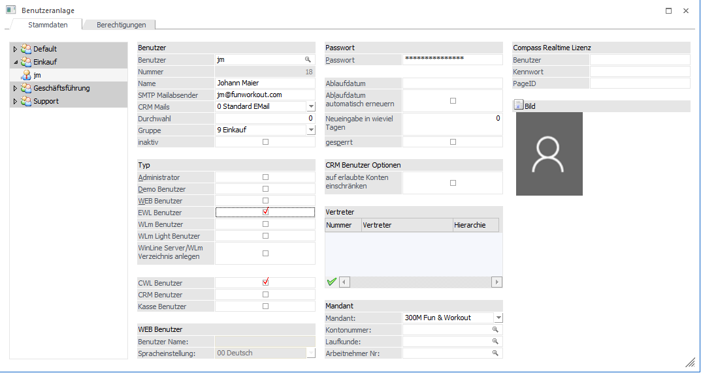
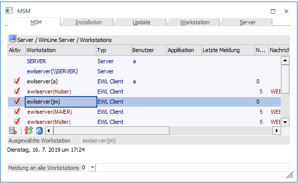
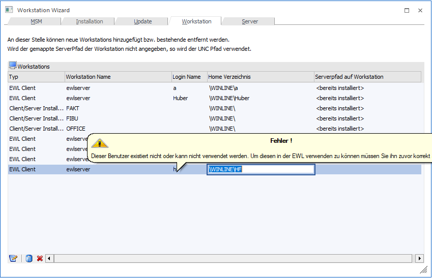
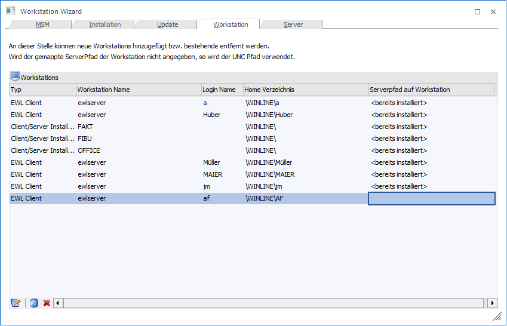

Nachdem der EWL Server eingerichtet wurde, können nun EWL Benutzer angelegt werden.
Es gibt zwei Möglichkeiten EWL Benutzer anzulegen:
ü Benutzeranlage
ü MSM / Workstation Wizard
Benutzeranlage
Im Menüpunkt…
1 WinLine ADMIN
1 Benutzer
1 Benutzeranlage
… kann bei vorhandenen bzw. neu anzulegenden Benutzern die Option "EWL Benutzer" aktiviert werden.

Nach Abspeichern der Benutzereinstellungen wird der Benutzer automatisch in die MSM Tabelle als EWL Client eingetragen.

Hinweis
Wird ein Benutzer über die Benutzeranlage als EWL-Benutzer definiert, so wird für diesen Benutzer kein eigenes Home-Verzeichnis (in dem Einstellungen betr. Sprache, Formulare usw. angegeben sind) angelegt. Diese erforderlichen Informationen werden in diesem Fall aus den Dateien im EWL-Verzeichnis gelesen.
Die Benutzer "a" und "Mesonic" sind nach der EWL Installation automatisch als EWL Benutzer definiert und haben ebenfalls kein eigenes Benutzerverzeichnis.
MSM /Workstation Wizard
Im Menüpunkt…
1 MSM
1 Workstation Wizard
… können bereits vorhandene Benutzer als EWL Benutzer angelegt werden.
Dazu dient der Workstation-Typ "5 EWL Client".
Ø Typ
Hier muss die Auswahl "5 EWL Client" getroffen werden.
Ø Workstation Name
Der Eintrag "ewlserver" wird automatisch belegt
Ø Login Name
Als Login Name muss ein bereits vorhandener Benutzer angegeben werden. Wird hier ein Benutzer angegeben der in der Benutzeranlage nicht vorhanden ist, erfolgt ein entsprechender Hinweis:

Ø Home Verzeichnis
Sobald der Benutzername angegeben wurde, wird automatisch das "Home Verzeichnis" für den neuen Benutzer vorgeschlagen.

Hinweis:
Bei dieser Art der EWL Benutzer Anlage wird ein eigenes Verzeichnis für diesen Benutzer angelegt.
Durch Anklicken des VOR-Buttons gelangt man in das nächste Fenster, von wo aus die Anlage gestartet werden kann.
In diesem Verzeichnis befinden sich dann z.B. die Benutzereinstellungen wie Druckereinstellungen oder Spracheinstellung, etc. enthalten in der Datei "client.config".